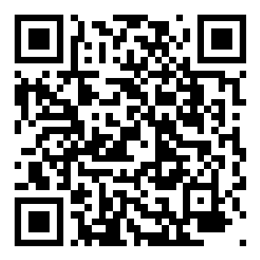

현재 약속드림치과의 공식 웹사이트는 지역 내 높은 인지도와 우수한 진료 실적(임플란트 35,000건 이상)을 보유하고 있음에도 불구하고, 보안 취약점과 일부 UI/UX의 불균형으로 인해 잠재 환자의 이탈 및 예약 전환 누수가 발생하고 있습니다.
본 제안서는 환자의 신뢰도를 높이는 안전한 보안 체계를 구축하고, 표준 디자인 가이드를 적용하여 최종 예약 전환율(Conversion Rate)을 극대화하는 것을 목적으로 합니다.
https:// 보안 연결(SSL)이 적용되지 않아 데이터 탈취 위험이 있습니다. 최신 브라우저에서 '안전하지 않음' 경고가 노출되어 병원 이미지에 타격을 줍니다.⚠ 핵심 이슈: 하단 플로팅 바의 빠른상담 신청하기 버튼이 동작하지 않는 문제는 UI 개선보다 우선 해결해야 할 전환(Conversion) 장애입니다. 아무리 방문이 많아도, 신청 버튼이 작동하지 않으면 상담·예약 성과로 연결되지 않습니다.
핵심 메시지: 이미지는 신뢰를 보여주는 역할을 하고, 구조화된 텍스트는 검색·AI가 병원을 찾아주게 합니다. 이미지 단독 구성으로는 SEO·GEO 모두 부족하며, 텍스트가 반드시 수반되어야 합니다.
표준 디자인 가이드 및 기술 표준을 엄격히 준수하여 아래와 같이 개선을 제안합니다.
| 분류 | 기존 화면 (As-Is) | 개선 방향 (To-Be) | 기대 효과 |
|---|---|---|---|
| 보안 | SSL 미적용 (http://) |
보안 인증서(SSL) 설치 및 https:// 강제 전환 | 환자 개인정보 보호, 브라우저 경고 제거로 신뢰도 확보 |
| 메인 배너 | 단조로운 고딕 텍스트, 2024년 데이터 | 최신 데이터 업데이트 및 타이포그래피 위계 고도화 | 병원의 전문성 및 압도적인 시각적 성과 강조 |
| 플로팅 배너 | 본문 텍스트를 가리는 사각형 박스 | 반응형 패딩 확보 및 FAB(원형/블러 효과) 컴포넌트화 | 콘텐츠 가독성 100% 확보, 세련된 레이아웃 유지 |
| 정보 영역 | 단순 텍스트 나열 | 인포그래픽 및 그리드(Grid) 컴포넌트 적용 | 진료시간 및 주차 정보의 해독 용이성(Scannability) 증대 |
| 상담 폼 (CTA) | 빠른상담 신청하기 버튼 미동작 + 투박한 UI | 신청 버튼 정상 동작 복구 + 브랜드 컬러 고대비 CTA | 상담 접수 누수 차단, 예약 전환율 상승 |
| SEO | 이미지 중심 → 검색엔진이 본문을 읽기 어려움 | 구조화 텍스트 + 메타·Schema로 SEO 재설계 | 지역 키워드 검색 유입·가시성 강화 |
| GEO | 이미지·컷만으로는 AI가 인용·추천하기 어려움 | FAQ·진료 강점 등 인용 가능한 텍스트 시그널 설계 | AI 검색·추천 채널에서의 병원 노출 확대 |
이미지만으로는 부족합니다. 시각 자료는 유지하되, 검색엔진·생성형 AI가 이해할 수 있는 구조화된 텍스트(헤딩, 본문, FAQ, Schema)를 함께 배치해야 합니다.
SEO (Search Engine Optimization): 페이지별 타이틀/메타 디스크립션, Open Graph, 로컬 비즈니스·의료 서비스 구조화 데이터(Schema), 시맨틱 헤딩·본문 카피를 정비해 안양 임플란트·교정 등 핵심 검색어 경쟁력을 높입니다. 이미지 alt·캡션도 텍스트 자산으로 활용합니다.
GEO (Generative Engine Optimization): AI가 인용하기 쉬운 명확한 병원 정보·진료 강점·FAQ형 문장·출처 시그널을 설계하여, ChatGPT·Gemini·Perplexity 등에서 약속드림치과가 신뢰 가능한 추천 병원으로 노출될 확률을 높입니다.
본 리뉴얼은 단순히 웹사이트를 시각적으로 아름답게 바꾸는 작업이 아닙니다. 보안적 결함을 해결하여 법적 리스크를 제로화하고, 미동작 CTA로 인한 상담 누수를 차단하며, 이미지 중심에서 벗어나 구조화 텍스트 기반 SEO·GEO로 검색·AI 유입까지 확장하는 종합 마케팅 최적화 작업입니다.
약속드림치과가 가진 훌륭한 의료 서비스와 신뢰 자산이 웹사이트에서도 온전히 빛을 발할 수 있도록, 당사의 입증된 표준 가이드를 바탕으로 최상의 결과물을 만들어 내겠습니다. 감사합니다.
아래 주소 또는 QR 코드로 데모를 확인하실 수 있습니다. 스마트폰 카메라로 QR을 스캔해 주세요.
Demo URL: https://yaksokdream-dental-renewal-demo.pages.dev/
※ PC로 보실 것을 권장드립니다. 현재는 데모 페이지이며 디자인 및 내용 수정은 더 자세하게 작업합니다.

모바일 스캔용 QR